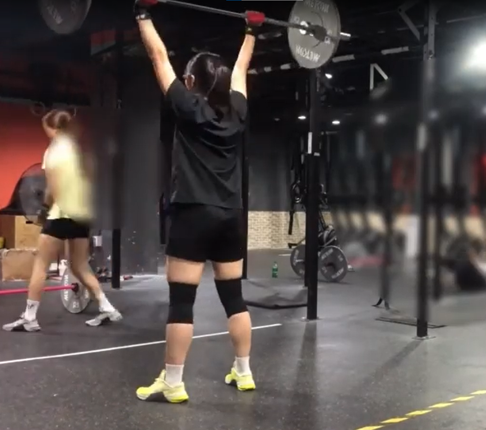
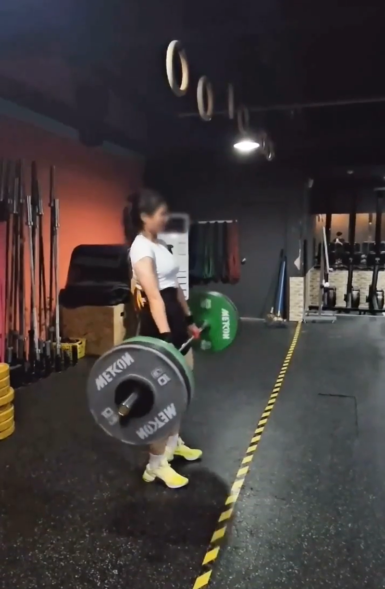

crossfit
크로스핏이란?
크로스핏은 Cross와 Fitness 의 합성어로 운동과 관련한 모든 동작들을 합쳐 놓은 프로그램이다. 바벨, 덤벨, 메디슨볼, 케틀벨, 철봉, 로잉머신 등 다양한 도구를 사용하며, 매일 새로운 방식의 조합으로 구성되는 프로그램으로 매일매일이 새롭게 느껴지는 운동이다.
크로스핏은 Cross와 Fitness 의 합성어로 운동과 관련한 모든 동작들을 합쳐 놓은 프로그램이다. 바벨, 덤벨, 메디슨볼, 케틀벨, 철봉, 로잉머신 등 다양한 도구를 사용하며, 매일 새로운 방식의 조합으로 구성되는 프로그램으로 매일매일이 새롭게 느껴지는 운동이다.
자취를 시작하면서 여건이 안돼서 운동을 못하고 있지만, 아직도 크로스핏 동작들을 종종 찾아보곤 한다.
나중에 안바빠지는 시기가 온다면 꼭 다시 할거다.
작년 한 해 동안, 크로스핏의 매력에 빠져서 운동 블로그도 쓰고 했었다! 사진들은 그때의 사진이다.
 